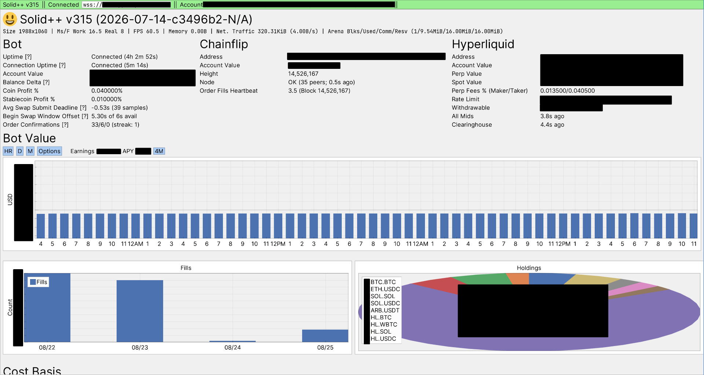
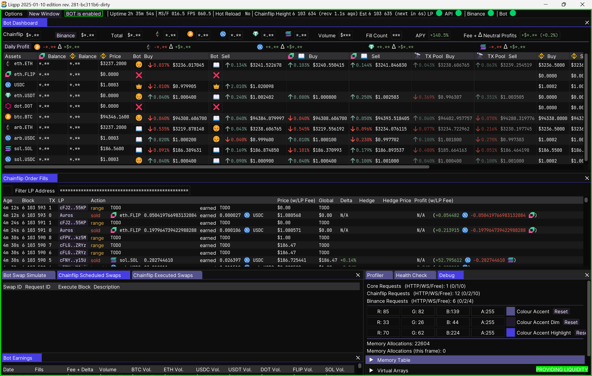
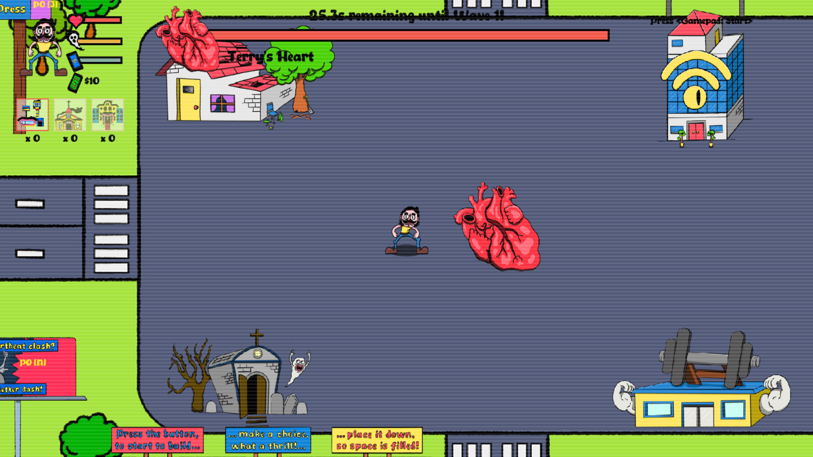
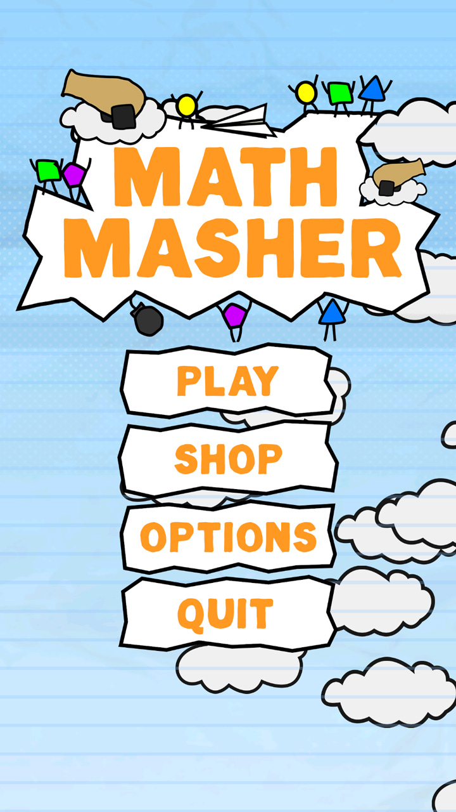
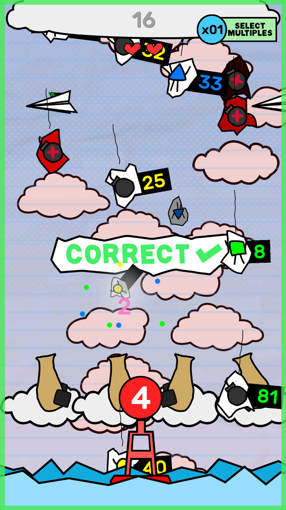
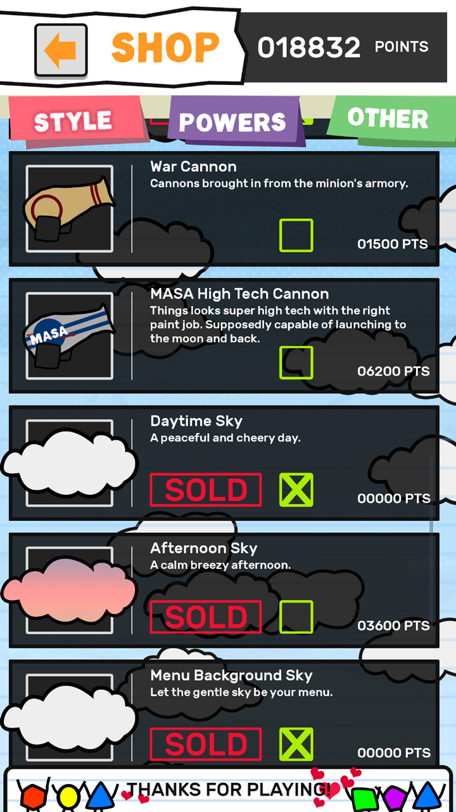
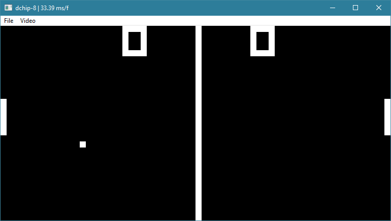
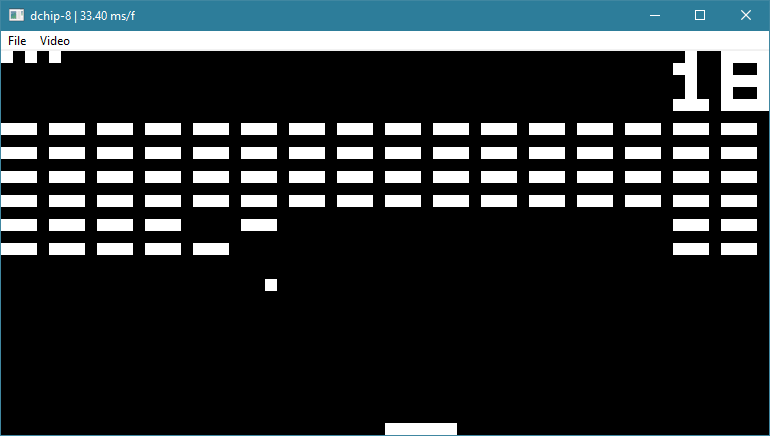
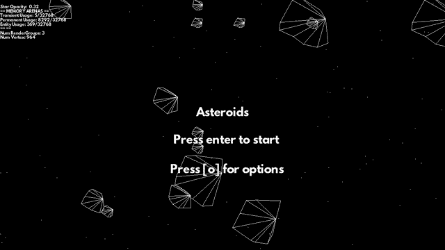
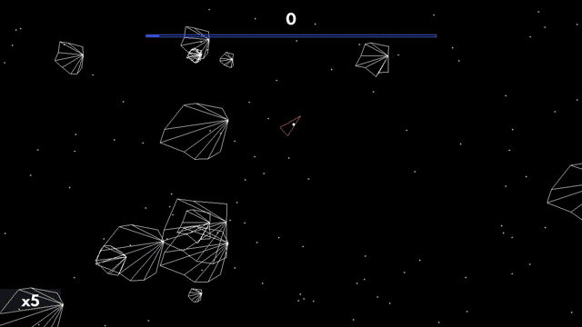

Links
| cv.doylet.2380i@simplelogin.com | |
| Gitea (Personal Projects) | https://git.doylet.dev |
| Github (Open Source Work) | https://github.com/doy-lee |
About
What I use
- Neovim
- OpenCode
- Win32 Primarily
- C/C++ (often C-style C++)
- Python for fun
Hey there!
G'day, I'm a software developer who enjoys low-level programming. I have an interest in building bespoke software using my own libraries, developing a "tech garden" so to speak. That is a bunch of foundational libraries[1] where I've written and/or understood every line of code in them. Any bug is a bug in my source code that I can go understand and fix.
Doing this is a nice forcing function that in turn provides an opportunity to learn about different domains especially those involved in game technology. Game development involves the marrying of many programming disciplines with a reasonably high bar of quality that is expected by end users and making games is fun and interesting!
I'm constantly learning and re-writing/improving[2] my foundational libraries as a form of training and practice[3]. In my experience each re-write has solidified my understanding and improved the API design in that domain without fail.
I learn and take inspiration from the design philosophies of:
- Handmade communities and friends (C. Muratori, R. Fleury, Wookash) for their initiatives to teach and cultivate high quality software.
- TinyGrad for democratising ML through the relentless pursuit of simplification.
- Epic Game Tools (formerly RAD Game Tools) for consistently shipping high quality tooling trusted by the industry.
My 5 cents
- Passionate for: Privacy, data sovereignty, game tech
- Likes Handmade: understanding under the hood, arenas, build.bat/sh, length-delimited strings
- Knows CPUs: SIMD, caches, bandwidth, OoO & speculative execution
- Designs APIs for users: zero-alloc, prioritise N > 1, explicit mem management, zero-is-initialisation (ZII), non-opinionated data-types
- Prefers explicitness/safety: handles over pointers, polling over callbacks, stacks over recursion, vendoring over package managers
- [1] Foundation Libraries git.doylet.dev/doylet/dn
- [2] Reinventing the Wheel Solving the Right Problems for Engine Programmers - Mike Acton @ 4:52
- [3] Practice Solving the Right Problems for Engine Programmers - Mike Acton @ 13:08
Work
Session (Private Messaging/Blockchain) [2024-2026]
- C++20
- Python (Flask/UWSGI)
- CMake
- Solidity (Smart Contracts)
- Cryptonote
- 2024 - 2026: C++ Senior Software Engineer
Session is a decentralised private messaging application that onion routes its messages using the Session Node network. The Session Node network is powered by the Oxen blockchain which allows operators to trustlessly join the network to store and route messages on behalf of Session. Operator tokens are escrowed by smart contracts and are rewarded for routing messages successfully.
I rejoined Session (formerly Oxen) in the blockchain team of 3 engineers, to assist the network migrate its nodes from the Oxen blockchain to a layer 2 blockchain, Arbitrum. This involves porting the trustless functionality from Oxen's C++ implementation into Solidity. That is deployed on Arbitrum as well as designing and implementing the next stage, privacy preserving subscriptions that grant access to premium messaging features.
The migration had to occur on a live network in a way that minimises disruption of the quality-of-service of users using Session. We migrated successfully in 2025 atomically switching over 1000+ nodes to change their source-of-truth from Oxen to Arbitrum and simultaneously migrated escrowed liquidity to Arbitrum.
- Built smart contracts[1] to allow operators to escrow a stake to join a decentralised network, receive rewards.
- Designed a certificate/token[2] based system to endow Session accounts with Pro features in a privacy preserving manner.
- Wired up payment hooks from Apple and Google into the certificate based system for Pro membership.
- Worked on a plugin system[3] for extensions such as bots and moderation in public group-chats.
- Session Messenger https://getsession.org/
- [1] Smart Contracts github.com/Doy-lee/session-token-contracts/tree/doyle-manual-contract-interaction
- [2] Payment Architecture github.com/session-foundation/session-pro-backend/tree/6bfea783644e4f2a77096fb2535465a7af86c5d0#architecture
- [3] Session Plugins github.com/Doy-lee/session-pysogs/blob/doyle-plugin-installers/plugins.md
Agent Orientated Software (AI/Robotics) [2020-2024]
- C++17
- CMake
- Docker
- DDS+Kafka (Data Distribution)
- 2D Discrete Event Simulator (ImGui, GLFW)
- 2022 - 2024: C++ Senior Software Engineer
- 2020 - 2022: C++ Software Engineer
AOS aims to build trustable and explainable AI using multi-agent systems with the cognitive framework, Beliefs, Desires and Intentions (BDI). My role involves improving the AI toolchain such as improving cross-agent collaboration, forward planning, scheduling and de-conflicting of agent intentionality, its execution and distributed agent communication to improve resilience in adversarial situations.
- Coordinated multiple toolchain upgrades of our in-house AI frameworks, end-to-end.
- Added virtual-memory backed allocators for cache locality, reduced sys-calls and memory profiling.
- Co-implemented protocol to distribute agents onto different routing technologies (DDS & Kafka).
- Owned the docs website with APIs & manuals, end-to-end for production releases.
- Implemented multiple discrete event simulators for verification of agent behaviours.
- Documented best practices, patterns and tutorials for designing effective multi-agent systems.
- Implemented real-world system specs in a multi-agent architecture to highlight deficiencies in the development methodology leading to new protocols, e.g. researching interfaces for humans to effectively contribute into the agent decision making.
- Agent Orientated Software aosgrp.com
- Github github.com/jackagents/jack
Oxen (Privacy Software/Blockchain) [2018 - 2022]
- C++14
- Boost
- CMake
- Docker
- Qt5
- Cross Platform Builds
- Open Source
- Applied Cryptography (Cryptonote/Libsodium)
- 2018 - 2020: C++ Software Engineer
Oxen is a not-for-profit, open-source company developing privacy protocols and tools. I implemented[1] a decentralized layer of servers known as the Service Node[2] network that distributes the blockchain and maintains layer access-control. They coordinate peer-to-peer to evict underperforming and malicious peers whilst generating entropy for securing blocks using checkpointing[3] and a commit-reveal scheme known as Pulse[4].
With over 1k+ servers and growing, the Service Node network provides a sybil-resistant foundation to facilitate a privacy preserving onion routing network, Lokinet, and, a privacy preserving messenger, Session.
- Rapidly learned & up-skilled as their first developer in the startup to form a development methodology and hiring practices.
- Implemented a resilient server layer over new P2P gossip protocols: node de/registration & rewards, service metrics & voting.
- Formed immutable checkpoints to secure blocks using shared consensus to provide faster finalization of transfers on the network.
- Created an on-chain DNS registry to map cryptographic keys to human readable aliases (e.g. Lokinet domains, Oxen wallets and Session aliases).
- Transitioned from Proof of Work to Proof of Stake live in production, deprecated miners for a commit-reveal scheme to generate entropy for minting blocks.
- Owned the release process (build/package/distribute) end to end.
- Patched 0-days and exploits & recovering from consensus failure on a live production network.
- Improved the test framework for including re-write of Monero's framework and adding integration tests using IPC over named pipes.
- Oxen Website oxen.io
- [1] Git Commits github.com/oxen-io/oxen-core/pulls?q=is%3Apr+author%3Adoy-lee+is%3Aclosed
- [2] Service Nodes oxen.gitbook.io/oxen-docs/about-the-oxen-blockchain/oxen-service-nodes
- [3] Checkpointing github.com/oxen-io/oxen-improvement-proposals/blob/master/LIPS/LIP-3.md
- [4] Pulse github.com/oxen-io/oxen-improvement-proposals/blob/master/LIPS/LIP-5.md
Older Work
2017: C++ Intern Tools Engineer, Wargaming Sydney
Game development company most popular for developing World of Tanks. I was in the tools team assisting with the development of the editor for the asset pipeline.
2014 - 2017: B. Computer Science, University of New South Wales
- UNSW unsw.edu.au
- Wargaming Sydney wargaming.com
Projects
2018 - CURR: DN Library git.doylet.dev/doylet/dn
- C style C++
- Single File Library
- Arenas
- Pools
- Hash-Tables
- Arrays
- Strings
- OS Primitives (Threads/Mutexes/Barriers...)
- Networking (cURL/Emscripten)
- Profiler
- Cross-Platform (Win32/POSIX/Emscripten)
My personal foundational libraries for tools in C-style C++ that replaces the C/C++ standard libraries for my projects. It provides a set of primitives designed around explicit memory control with allocator-aware APIs, zero-allocation patterns, and arena-based memory management where appropriate.
The library is designed for trivial integration: a single amalgamated header and implementation file with no external dependencies required. It targets Win32, POSIX, and Emscripten/WASM, with compile-time feature toggles to include only what's needed.
Core modules include arrays, hash tables, string manipulation with optional AVX-512 acceleration, a frame profiler, thread-local arena contexts with scratch memory, and a networking layer abstracting cURL and browser Fetch APIs. Debug tooling is built in: ASAN memory poisoning, use-after-free detection for scratch arenas, memory scrubbing on deallocation, and leak tracking.
It has continually evolved since the start of my programming career and has been a testing ground for understanding the implication of different API designs, how common functionality is built and exploring different primitives (like learning about AVX-512 to use in string APIs).
2023 - CURR: TELY Engine
- C style C++
- Sokol
- Dear ImGui
- FreeType + HarfBuzz
- 2D Renderer
- Asset Management
- Cross-Platform (Win32/Emscripten)
An in-house engine and framework built on Sokol that provides a platform layer, 2D batched renderer, asset management, font rendering with FreeType and HarfBuzz, streaming audio, video playback, and input handling. It is the foundation for most of my GUI projects.
It compiles as a native desktop app and can target the web. It includes a deferred asset loading system, a sprite sheet packer with keyframe animation support, renderer that outputs vertex batches, a basic GPU wrapper (samplers, render passes, pipelines) and a networking layer backed by cURL on desktop and fetch APIs via the browser.
It is a project whose goal is to be a forcing function for learning about game technology as needed to build hobby projects. Its features are at various levels of maturity as necessitated to get my hobby projects functional.
2025 - CURR: Solid++
- Python
- C++ (GUI)
- Chainflip
- Hyperliquid
- Market Making
- ImGui
- SQLite
- WebSocket
- Emscripten/WASM
 |
A complete rewrite of Liquid++ bot in Python with a native C++ ImGui dashboard which also targets the web using Emscripten for remote monitoring. This was an experiment into the viability of using Python for faster iteration on protocol updates on Chainflip as well as testing newer strategies more easily. It was also an experiment in using ImGui for web UIs.
The rewrite was a trade-off sacrificing latency for faster iteration. Chainflip has a 6-second block time which makes sub-second latency less critical than the ability to iterate quickly. The bot runs two strategies: a delta-neutral hedge across Chainflip and Hyperliquid (perps and spot), and a basic Bybit spot strategy. Bot pricing is configurable using averages over a lookback window with tools to identify competing orders and to offer to beat or match them in real-time.
The C++ GUI compiles to both a native desktop app and a WASM web build allowing for quick local iteration whilst allowing remote monitoring. It communicates with the Python backend over WebSocket using a custom binary protocol. Features include a self-tuning swap window, trading performance tracking and sends notifications via Session messenger webhooks.
2024 - 2025: Liquid++
- C style C++
- Chainflip
- Market Making
- ImGui
- Sokol
- SQLite
- Backend
 |
A market-making bot written in C++ for Chainflip, a decentralised cross-chain exchange. The bot provides liquidity by placing limit orders on Chainflip's concentrated liquidity AMM, then hedges directional exposure by taking opposing perpetual positions on Hyperliquid. It pulls price data from Bybit as a secondary oracle to inform pricing.
The system connects to three exchanges simultaneously via WebSocket, each with dedicated rate limiters and staleness detection to prevent trading on stale data. Orders are priced using the external mid-price plus a configurable profit margin, and a kill-order is scheduled for the next block to cancel unfilled orders before they can be picked up at an unfavourable price.
It has hot-reload DLL support, a platform layer (Sokol) separates business logic into a reloadable DLL. Dear ImGui is used for monitoring positions, order fills, and exchange connectivity. A separate web dashboard server (CivetWeb) publishes binary heartbeats over WebSocket for remote monitoring in a browser.
2023: Terry Cherry
- C style C++
- Raylib
- Emscripten
- 2D Tower Defence-Esque
 |
A 2-player local co-op top-down tower defence game developed over 4 weekends in a game jam. Players defend "Terry's Heart" from waves of love-themed enemies (catfish, smoochie teleporters, and clinger dashers) that march along waypoint paths toward the base.
Players earn coins by defeating enemies and purchase upgrades or buildings from the storefronts. A pub that slows enemies, a church that converts them to allies and an airport that flies them to the back of the queue. Monkey totems spawn periodically which can disable enemy portals when delivered to them shutting them down permanently to win.
The engine features a tree-based entity system with generation-indexed handles[1] to prevent use-after-free bugs, fixed-timestep physics with swept AABB collision and a waypoint path-finding system. Built on Raylib with a custom C++ meta-build system, hot-reload DLL support, and an Emscripten web build targeting WebGL.
- Play Terry Cherry game.doylet.dev/terry_cherry/
- Source Code git.doylet.dev/doylet/feely_pona
- [1] Handles are the better pointersfloooh.github.io/2018/06/17/handles-vs-pointers.html
2020: intc Software u128/256 bit port to C git.doylet.dev/doylet/intc
- C99/C++
- Open Source
- Single File Library Port
intc is a port of calccrypto's uint128/256 library into a single header file library to allow u128/256 calculations. This port is primarily C first and provides C++ helpers like operator overloads that are opt in.
- calccrypto's uint256_t github.com/calccrypto/uint256_t
2020: RaylibSIMD SIMD Software rendering in C git.doylet.dev/doylet/RaylibSIMD
- C99
- SSE2
- Graphics Programming
Raylib is a game-engine by Raysan5 whose main focus is to make game engine programming simple and enjoyable. In this project, I rewrote the software-rendering routine to use SSE2/3 instructions to attain the expected 4x speed-up by taking advantage of data-parallelism offered by SIMD.
- Raylib Website raylib.com
2017: DTRenderer 3D Software rendering in C++ git.doylet.dev/doylet/DTRenderer
 |
DTRenderer is an attempt to build a simple software renderer from the ground up. The main goal is to build an intuitive understanding of graphics mathematics, rendering pipeline and core concepts. It runs as a Win32 program with minimal dependencies.
- 2D Software Rendering
- Alpha Blending
- Bilinear Filtering
- Correct Color Space Pipeline (SRGB <-> Linear)
- Rasterisation
- Texture Mapping
- Translation, Rotation, Scale
- 3D Software Rendering
- Full Bright, Flat, Gouraud Shading
- Orthographic, Perspective Projections
- Custom Wavefront Obj Loader (minimal subset)
- Hot Reloadable DLL for Renderer Code (taken from Handmade Hero)
2017: Math Masher Math game for mobile doylet.dev/luneaustralia
 |
 |
 |
Math Masher is a cross-platform mobile app that aims to teach basic arithmetic skills including addition, subtraction and multiplication by gamifying the learning experience. The app was developed in a team using the Cocos2DX framework in C++. My role in the project is as the lead developer and assisting role with asset design.
- Project management (Trello, minutes meeting, code review etc.)
- Game engine architecture (Gameplay, UI, shopping mechanics, debug)
- Basic sound editing (Compressor, EQing, normalisation)
- Asset designs (Creating graphical assets with Photoshop)
- Trailer youtube.com/watch?v=AUozUZ8aY7g
2017: DCHIP8 Chip8 interpreter git.doylet.dev/doylet/dchip-8
 |
 |
DCHIP8 aims to emulate the CHIP8 architecture to better understand at a lower level operations between memory, cpu, input and output.
- Fetch, Decode, Execute Opcodes
- Modelling memory, registers and basic CPU architecture
- Software Rendering and interaction with Win32
- Minimal dependencies, single file executable
- Specification Sheet devernay.free.fr/hacks/chip8/C8TECH10.HTM
2016: Dengine 2D engine for asteroids git.doylet.dev/doylet/dengine
 |
 |
Dengine is a solo project, 2D game engine developed with OpenGL and low-level libraries in C. The main goal of Dengine is to facilitate learning from many aspects of Computer Science. Alongside Dengine, Asteroids is being built which guides the development of features for the game. Dengine is inspired by Handmade Hero, with a focus on developing as many features with minimal libraries, such that it is not too time-consuming and counter-productive to do so.
- Asset Management (load data into intermediate representations)
- Audio API from OpenAL
- Basic 2D Game Mathematics/Physics (Vector, Trig, Explicit Euler)
- Collision Detection (Single Axis Theorem, Minkowski Sum/Diff, AABB)
- Debug Services & Displays
- Entity Component Systems
- IMGUI Systems
- Input Parsing
- Push-Buffer Memory Systems
- Small Size Array Optimisations
- Standard Library Replacements (e.g. atoi, strlen, itoa, string)
- Texture Atlas Support, Runtime Font Packing
- OpenGL 2D Rendering Pipeline & Batching Render Calls
- Handmade Hero handmadehero.org